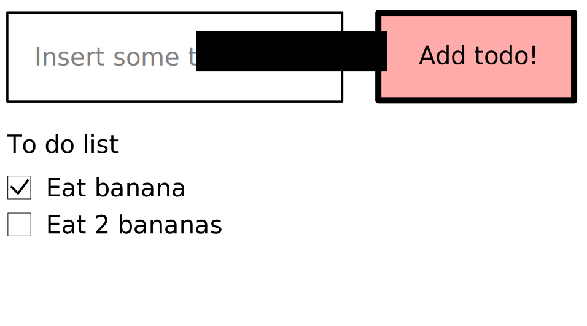
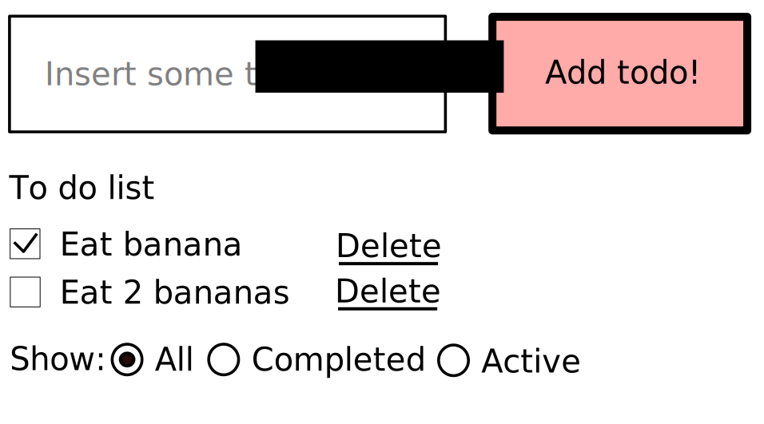

Choose the right Flux!
In a kingdom rich of async calls and complexity,
only the right hero can bring peace and scalability.
Flux can be the right choice, but there are hundreds implementations and we must choose the right one.
Guido D'Orsi @ RomaJS
Tanto tempo fa, in una piccola interfaccia, regnava la pace e la serenità.
Non c'era una vera e propria organizzazione, ma i componenti erano pochi e gestirli era abbastanza facile.

Poi però l'applicazione crebbe, i componenti iniziarono a diventare tanti.
Iniziarono ad uscire fuori i primi bug, ma correggerli non faceva altro che aumentare la complessità del sistema.

Le feature aumentarono e con esse anche il caos, quindi si decise di dare un pò di organizzazione.
Venne utilizzato il pattern MVC
Però il cambiamento non veniva visto di buon occhio. Era difficile dire chi doveva essere il Controller, chi il Model e chi la View
Poi qualche pazzo ci mise dentro anche il two way data binding. Il Controller iniziava a diventare enorme e pieno di responsabilità,
e quando una View tentava di parlare con un Model succedeva il finimondo.
Fu così che si decise di dare una svolta, scegliendo un pattern completamente nuovo, Flux
Con Flux ognuno aveva un compito ben delineato, e sapeva bene con chi parlare e chi ascoltare.
La View parla con gli Actions Creators, che, dopo aver fatto un bel discorsetto con le Web API, e creano azioni da mandare al Dispatcher, che a sua volta la propaga a tutti gli store.
Gli Store prendono le action e aggiornano lo stato dell'applicazione.
Dopo che hanno fatto tutto raccontano le modifiche alla View che fermano il giro e mostrano il nuovo stato al'utente.

Come implementare Flux?
Ci scegliamo una libreria o ci facciamo una cosa nostra?
Io penso che l'unico modo per utilizzare una tecnologia è conoscerla bene,
per questo oggi voglio provare ad analizzare quelle che possono essere le scelte principali
che vanno effettuate quando si sceglie di utilizzare Flux.
Iniziamo col rispondere alla domanda che cos'è un action?
Abbiamo capito che è il messaggio che viene creato su richesta delle View e spedito a tutti gli store,
ma come sono fatte?
{
type: 'ADD_TODO',
data: actionData
}
Un'action è solitamente un oggetto plain, ma si ha totale libertà su come definirla.
L'unica cosa comune a tutte le implementazioni Flux è l'attributo type, valorizzato con una stringa in snake upper case
{
type: 'ADD_TODO',
payload: actionData,
meta: actionMeta
},
{
type: 'ADD_TODO',
payload: new Error(),
error: true
}
Se si vuole c'è anche un pattern per le action, chiamto Flux Standard Action.
Abbiamo parlato di actions, che sono i messaggi.
Questi messaggi, come abbiamo già detto vengono generati dagli action creators.
In poche parole sono delle funzioni che generano delle action e a volte ne richiedono anche il dispatch.
const addTodo = (todo) => {
dispatch({
type: 'ADD_TODO',
payload: todo
});
};
Ma l'asincrono?
const addTodo = (todo) => {
saveToDoWebApi(todo)
.then((todo) => {
dispatch({
type: 'ADD_TODO',
payload: todo
});
})
.catch(() => {
dispatch({
type: 'ADD_TODO',
payload: new Error('damn'),
error: true
});
});
};
Così diventa facile anche fare optimistic updates
const addTodo = (todo) => {
dispatch({
type: 'ADD_TODO',
payload: todo
});
saveToDoWebApi(todo)
.catch(() => {
dispatch({
type: 'REMOVE_TODO',
payload: todo
});
});
};
const addTodo = (todo) => ({
type: 'ADD_TODO',
payload: todo
});
dispatch(addTodo(myPrettyTodo));
Beh però qua per gestire l'asincrono dobbiamo introdurre un concetto nuovo.
Il middleware.
I middleware non sono nient'altro che funzioni che si trovano tra l'action creator e il dispatch vero e
proprio.
const addTodo = (todo) => ({
type: 'ADD_TODO',
payload: saveToDoWebApi(todo)
});
resolvePromise(dispatch, addTodo(myPrettyTodo));